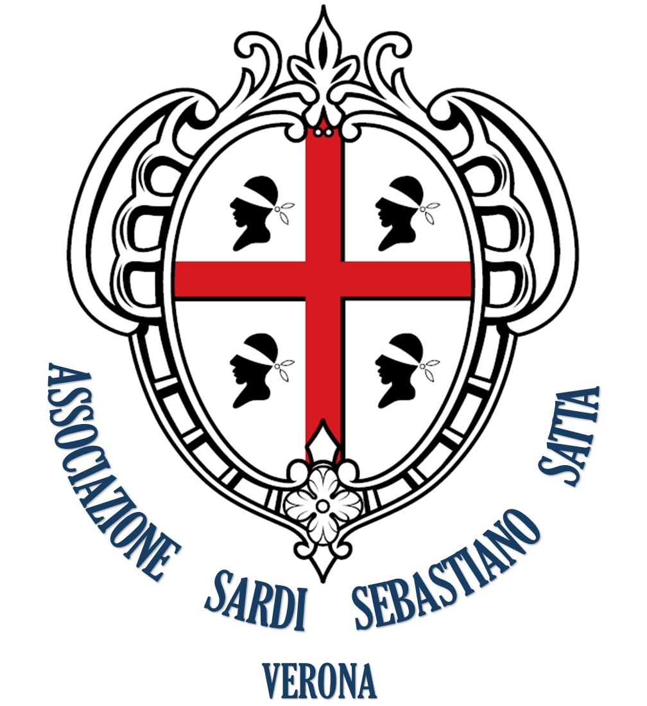

Sei sicuro di voler eliminare questa iscrizione?
Il sito dell'Associazione Sardi "Sebastiano Satta" di Verona ha bisogno di JavaScript abilitato sul dispositivo per funzionare correttamente.Per favore, abilitalo nelle impostazioni del browser e ricarica la pagina.